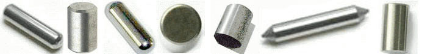
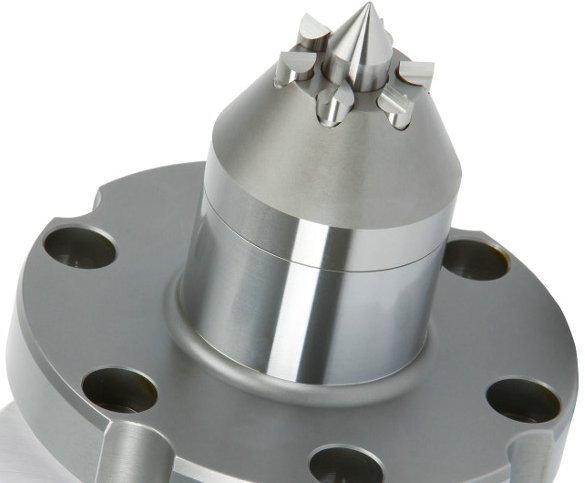
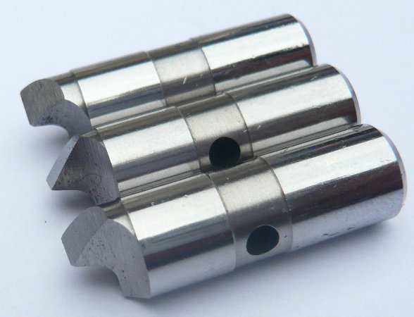
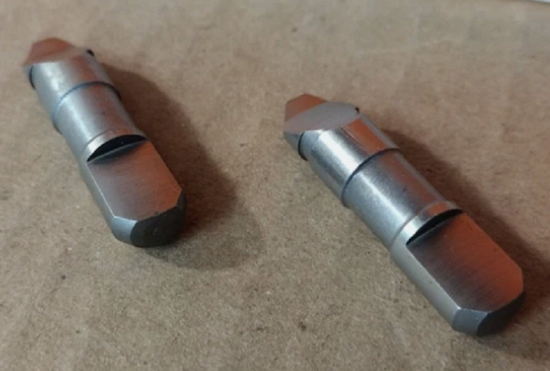
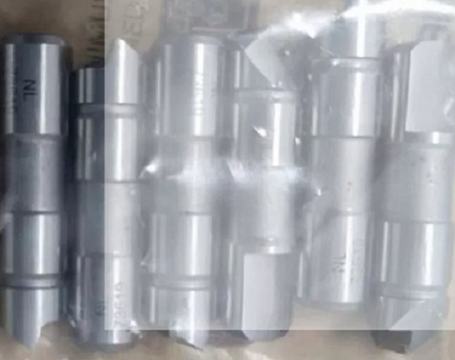

Wir sind ein chinesischer Hersteller mit langjähriger Erfahrung in der Fertigung von Mitnehmerbolzen mit voller Mitnahmebreite für Stirnseitenmitnehmer.
Senden Sie uns einfach Ihre Zeichnung oder ein Muster. Wir erstellen Ihnen innerhalb weniger Tage ein verbindliches Angebot für Mitnehmerbolzen mit voller Mitnahmebreite für Stirnseitenmitnehmer. Testen Sie unsere Qualität – wir überzeugen durch Präzision, Zuverlässigkeit und faire Konditionen.


Bei herkömmlichen Mitnehmerbolzen ist die effektive Kontaktfläche zwischen Bolzen und Werkstück oft begrenzt. Das kann zu punktuellen Überlastungen, vorzeitigem Verschleiß oder ungleichmäßiger Kraftübertragung führen. Unsere Mitnehmerbolzen mit voller Mitnahmebreite wurden genau für diese Herausforderung entwickelt.


Sie bieten über die gesamte Breite des Bolzens einen gleichmäßigen, formschlüssigen Kontakt zum Werkstück. Das bedeutet: Höhere Drehmomentübertragung – durch die vergrößerte Kontaktfläche. Reduzierte Flächenpressung – geringere Gefahr von Eindrückungen oder Beschädigungen am Werkstück. Längere Standzeit – gleichmäßige Lastverteilung verringert den Verschleiß. Optimale Prozesssicherheit – auch bei schweren Zerspanungsaufgaben.
| Typ | Begriff | Eigenschaften | |||||||||
|---|---|---|---|---|---|---|---|---|---|---|---|
| Vollbreite | Vollbreite Antriebsstifte | Aluminiumgehäuse mit dünner Wand, 2 mm Wandstärke | |||||||||
| Eckig | Versetzte Antriebsblattstifte | Geschmiedeter Zahnradrohling mit Zunder | |||||||||
| Zentriert | Zentrale Antriebsblattstifte | 45# Stahl Vollwelle, plan gefrästes Ende | |||||||||
| Vollbreite | Vollbreite Antriebsstifte | Kupferhülse, dünn und leicht verformbar | |||||||||
| Eckig | Versetzte Antriebsblattstifte | Edelstahlflansch, grob geschmiedete Oberfläche | |||||||||
Diese Bauform wird besonders dann eingesetzt, wenn der Stirnseitenmitnehmer über einen besonders großen Spannbereich verfügt oder wenn Werkstücke mit unterschiedlichsten Durchmessern bearbeitet werden müssen. Wir produzieren ausschließlich in unseren eigenen Werken in China – mit modernsten CNC-Schleifmaschinen, Härteanlagen und optischen Messgeräten.Jeder einzelne Mitnehmerbolzen mit voller Mitnahmebreite wird nach Ihren Zeichnungsvorgaben gefertigt.
Wir wissen, dass viele Kunden aus Deutschland, Österreich und der Schweiz hohe Ansprüche an Präzision und Zuverlässigkeit stellen. Deshalb arbeiten wir nach einer qualitätsorientierten Fertigungsphilosophie: Jeder Bolzen durchläuft eine 100%-Prüfung, wir dokumentieren alle relevanten Maße und Härtewerte. Gleichzeitig profitieren Sie von unseren wettbewerbsfähigen Preisen und kurzen Lieferzeiten.